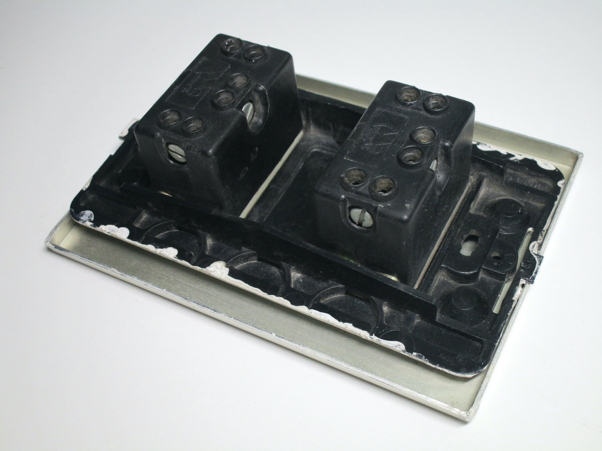
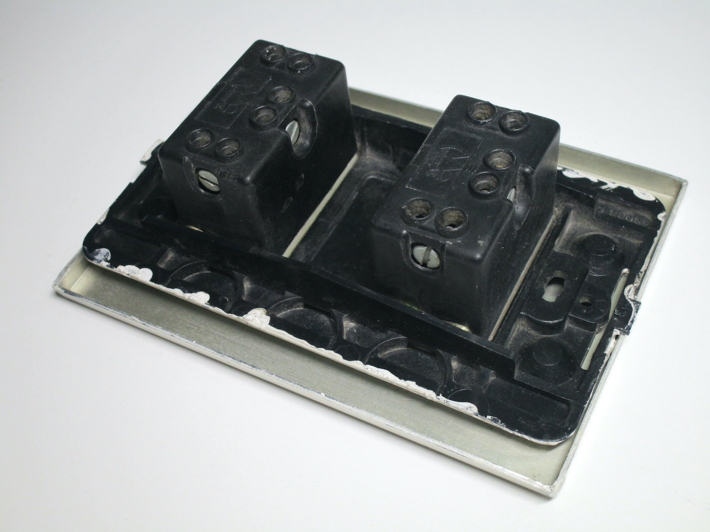
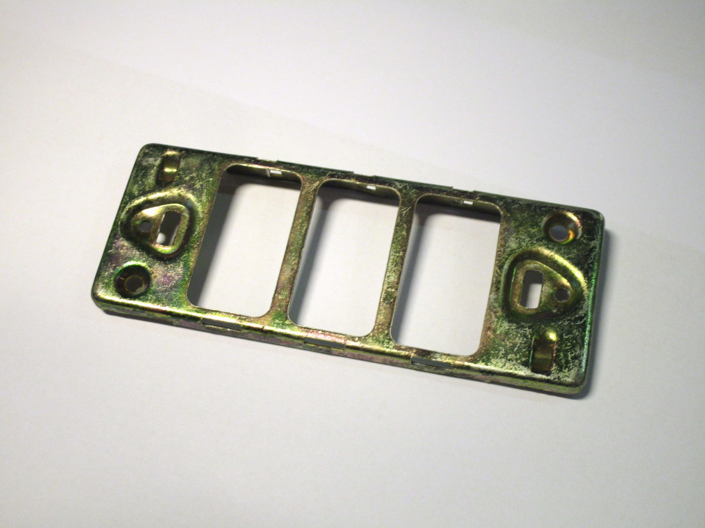
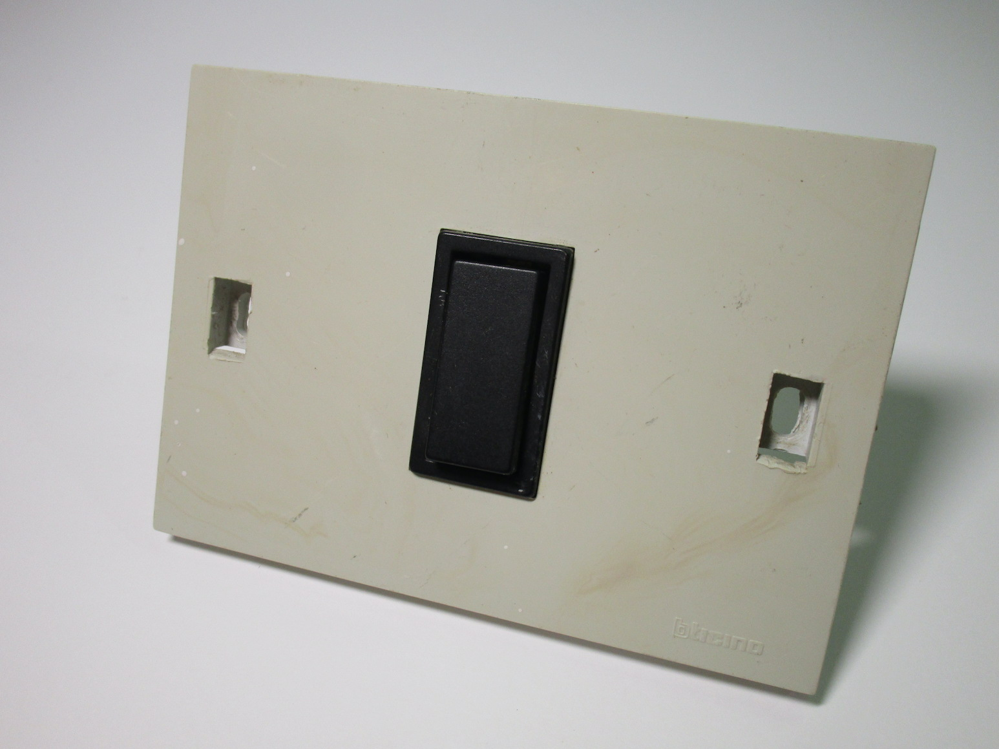
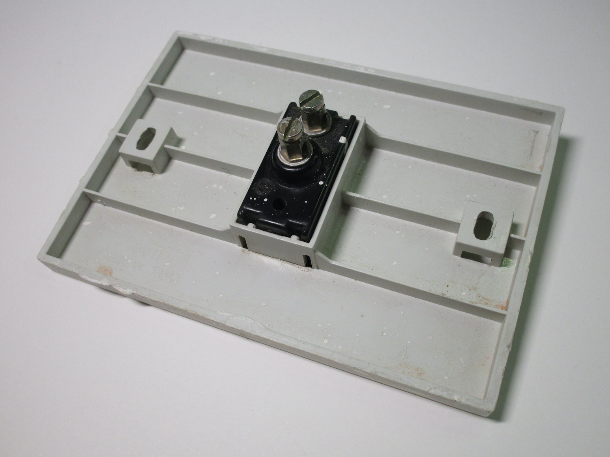
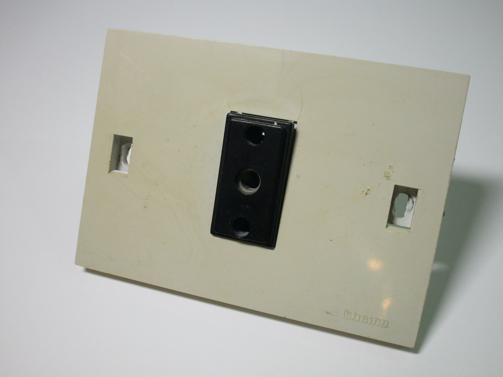
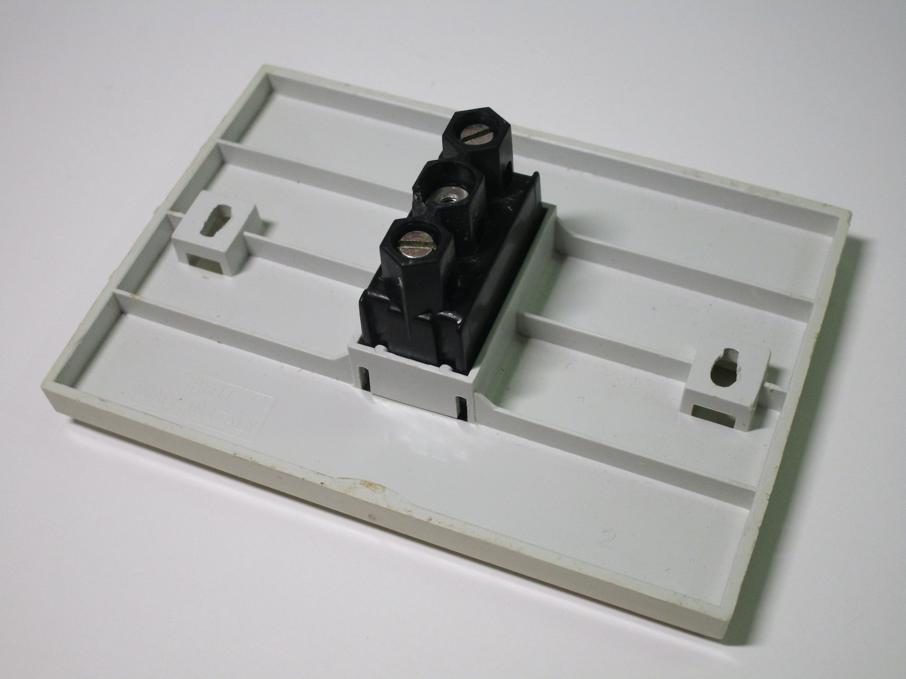
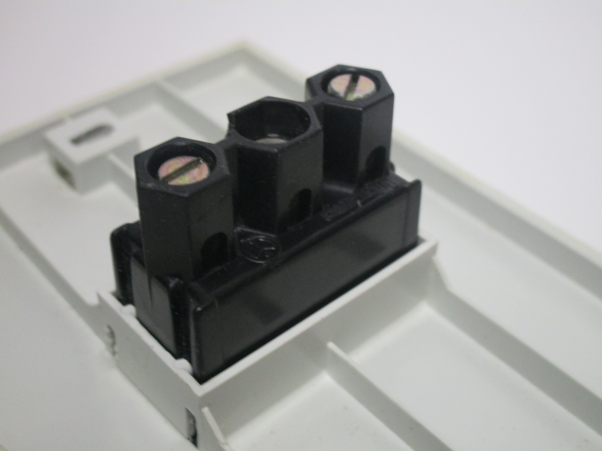

Devices for rectangular boxes
These items all use rectangular wall boxes; the rectangular box standard was created in the 60s (but became widespread around the 70s) as part of the BTicino Magic series; as such, items made for these boxes are almost universally modular in some way.
The standard size of wall box is the 503, this was essentially copied from the American standard of boxes and can hold 3 modules. There are also other sizes, such as 504 and the (now rare) 505, which can respectively hold 4 and 5 modules.
BTicino Magic modular series
The Magic series was extremely influential, shaping how electrical accessories work even nowadays. It introduced the concept of modular devices - instead of having sockets or other items made into a single unchangeable block, everything was instead broken down into modules, which then fit onto a support plate, enabling for a very high degree of flexibility.
 

{kind=link}
While the system did see some changes throughout the years - mainly switching from metal to plastic support plates, the way it worked remained the same: modules are clipped onto a support plate and wired up, then everything is screwed into the wall box, and a decorative faceplate is added.
Modules of various types are available, not just sockets or light switches: buzzers, phone jacks, TV aerial connectors, as well as relays, fuses, breakers, and indicators lamps are just a small selection of what was and still is available. Thus, all sorts of combinations wre possible, depending on the specific needs of the installation.
{kind=link}


Non-modular BTicino light switches
Rating: 10A 250V
The vast majority of devices meant for rectangular wall boxes were modular, outside of blank cover plates. However, some non-modular devices for them did exist, even if they were very rare. This is an example of one of them, a set of three lightswitches made by BTicino.
They're very similar in appearance to the Magic series, though with plastic surrounding each switch. Looking on the back it appears like the switches are in fact modules of some sort, though the way they're held seems to suggest like they came like this from the factory and aren't meant to be removable.
It's likely that this was a cheaper alternative to the modular Magic series, as that would have required buying more items (modules, a support plate and a cover plate).


Bticino "Dogic" series
Rating: 6A (light switch)/16A (socket) 250V
These two devices, a light switch and a 16A power socket, initially looked very much like another non-modular series. However, after some research, it appears that they are part of the modular Dogic series, a cheaper alternative to the more expensive Magic lineup.
The inexpensive nature of these devices is very obvious, with the faceplate doubling as the support plate (and thus having visible holes for the screws, though originally these would have been hidden by cover) and the overall contruction feeling very cheap and lightweight.
 {kind=link}
{kind=link}

It's interesting to note that the socket and light switch use two different kinds of terminals: while the latter uses the unsafe style seen in older items, the one on the socket has them covered on the sides by plastic, in order to protect the user from accidental contacts.
Perhaps this could have resulted from a change in safety regulations while the series was sold - this is the newest item in the collection that uses this style of terminals, which aren't seen on any other later devices.
  {kind=link}
{kind=link}
{kind=link}